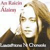

Celtic Lyrics Corner > Artists & Groups > Lasairfhíona Ní Chonaola > An Raicín Álainn > Amhrán Na Phúca
|  | Amhrán Na Phúca |
| Credits : | n/a |
| Appears On : | An Raicín Álainn |
| Language : | Gaeilge (Irish Gaelic) |
| Lyrics : | English Translation : |
| Ó, éireoidh mé ar maidin in ainm an Domhnaigh | I'll get up in the morning in the name of Sunday |
| Is rachaidh mé mo chónaí ar chnocánín bán | And I will take up residence on the little fair hill |
| Ó déanfaidh mé teach ann ar leataoibh an bhóthair | Oh I will build a house there beside the road |
| I bhfogas don chóngar abhus agus thall | At easy reach to all places |
| San áit a mbheidh agam cead bealaigh is bóthair | There I'll have the freedom of the roads |
| Caidreamh lucht eolais, fear loing agus báid | Where I will meet learned people of ships and boats |
| Beidh scoil ag lucht ealaíon 's ag ógánaigh óga | There will be a school for artists and for the young |
| Ar lorg an eolais ag teacht ar mo shráid | Seeking knowledge at my door |
| 'Sé iomrá na gcailleach sna seandaoine críonna | It is the talk of old women and wise old folk |
| D'fhág mearbhall ar m'intinn is néal i mo cheann | That has my mind confused and my head spinning |
| A rá go raibh an Púca ann ó aimsir na Díleann | Saying that the Pooka was there since the time of the Flood |
| Go bhfaca na daoine é, ach níl fhios cén t-am | That people saw him, but no one can tell when |
| Níorbh é sin a b'ait liomsa ag teacht go ráithe an Gheimhridh | It is not that I would want as winter approaches |
| Iad a bheith ag déanamh íospart istigh ar mo shráid | To have my front garden turned upside down |
| Go mbíonn sé ina chat is na mhada san oíche | At night he is a cat or a dog |
| Is nár thúsice ina Phúca é ná ina sheanghearán bán | And as soon as he is a Pooka he turns into an old white gelding |
| Dhá bhfaighfainnse capall chomh maith leis an bPúca | If I had a horse as fast as the Pooka |
| Bheadh m'anamsa lúfar ag imeacht is a teacht | My soul would be fast moving, getting there and coming back |
| Dhá mba thíos i gCeann Gaineamh a thógfadh sé a ualach | If he loaded his cargo way down at Ceann Gaineamh |
| Ó bheadh sé i gceann leathuair ag binn Éamainn Uí Bhriain | Oh he'd be at Eamonn O'Brien's gable within the half-hour |
| Cuirfidh mé sconsa le hiomaire an Líonáin | I will raise a fence by Leenane's Ledge |
| Ní ligfidh mé aníos é le fána an Toirc Mhóir | To stop him getting in by Torc Moore Slope |
| Dhá n-ionsódh sé Caiseal trí cheartlár na Maoine | If he approaches Cashel through the center of Maoine |
| Anonn go tír caorach nó anonn don tír ghlas | Over to the sheepland or over by the green pasture |
| Ní ligfidh mé tharam ar thalamh ná ar thoinn é | I won't let him pass by me over land or sea |
| 'S beidh aireachachas cruinn agam roimhe sa ród | And I'll keep a close eye on him on the roadway |
| Dhá gcastaí le Jeaic é, fear maith atá sa tír seo | If he happens on Jack, a man of renown |
| Bhainfeadh sé píosa dhá leiceann is dhá shrón | He will surely put his nose out of joint |